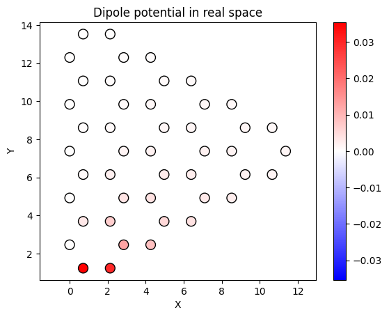

Potentials
GRANAD lets you specify coupling to external light using (an arbitrary combination of) electromagnetic potentials. You do this by modifying GRANAD's internal representation of the Hamiltonian, which is just a dictionary.
Background
Consider GRANAD's master equation
By default, GRANAD simulates the following dipole-gauge expression for the Hamiltonian including an external electric field \(\vec{E}\)
where
- \(h^{0}\) is the unperturbed or bare Hamiltonian constructed from localized orbitals.
- \(\vec{P}\) is the polarization operator depending on space \(\vec{r}\) and transition dipole moments \(\vec{d}\), leading to an interatomic potential \(\vec{E}\vec{r}\) and an intra-atomic potential \(\vec{E} \vec{d}\).
- \(\rho^{0}\) is the stationary density matrix of the system's ground state, and \(C\) is the Coulomb matrix (a subset of ERIs).
You can modify GRANAD's internal representation of the Hamiltonian to include your own potential terms. Here, you have two options:
- Define potentials completely on your own.
- Use built-in potentials.
The first solution is more flexible, but a bit more complicated, so we will focus on the built-in potentials in this tutorial.
Built-in Potentials
First, we set up our small triangle.
from granad import MaterialCatalog, Triangle
flake = MaterialCatalog.get( "graphene" ).cut_flake( Triangle(15), plot = True )

If we call flake.master_equation, the flake will turn the arguments we passed in (e.g., the illumination) into a representation of the Hamiltonian. By default, this representation corresponds to the dipole-gauge model discussed above.
This representation will be passed to "lower-level" simulation functions. These functions will turn it into arrays and integrate it.
We can directly look at this representation.
{'bare_hamiltonian': <function BareHamiltonian.<locals>.<lambda> at 0x7f0794377600>, 'coulomb': <function Coulomb.<locals>.<lambda> at 0x7f07943777e0>}
We see that it is just a dictionary. The keys are strings, the values are functions. Each function is a term in the Hamiltonian. You can tell which one by looking at the keys again
dict_keys(['bare_hamiltonian', 'coulomb'])
So, as we said, we have a bare hamiltonian, and an induced coulomb interaction. But where is the dipole gauge coupling? Remember that we did not pass in any external illumination, so GRANAD assumes there is none. Let's change this quickly
from granad import Wave
wave = Wave( amplitudes = [1.0, 0., 0.], frequency = 1.0 )
hamiltonian_model_external_illu = flake.get_hamiltonian( illumination = wave )
print(hamiltonian_model_external_illu.keys())
dict_keys(['bare_hamiltonian', 'coulomb', 'potential'])
We add our own potentials to the Hamiltonian by adding entries to the dictionary, like hamiltonian_model["my_potential"] = my_potential. The name for the potential does not matter; it's just nicer for us to look at than function pointers.
In choosing my_potential, you have several options, documented in the API. For demonstration, we will model a dipole pulse
from granad import potentials
dip_pulse = potentials.DipolePulse( dipole_moment = [1., 0., 0.],
source_location = [0., 0., 1.],
omega = 3,
sigma = 1,
t0 = 3)
We can visualize its impact at any time t. The potential is a function and returns a diagonal matrix, so we can do the following (the arguments to this function will be explained in the tutorial on custom master equations, for now we just live with them).
import jax.numpy as jnp
time = 1.0
flake.show_2d( display = jnp.abs(dip_pulse(time,
0, # this argument will be explained in another tutorial, you can always pass in 0
flake.get_args() # this argument will be explained in another tutorial, you can always copy this
).diagonal()) )

We can now include it in the Hamiltonian
To simulate this Hamiltonian instead of the default one, we have to pass it explicitly to the TD simulation function
import diffrax
result = flake.master_equation( end_time = 40.0,
hamiltonian = hamiltonian_model,
expectation_values = [flake.dipole_operator],
relaxation_rate = 1/10,
solver = diffrax.Dopri8() # high accuracy explicit solver to avoid oscillating tails
)
flake.show_res( result )
RHS compiled
RHS compiled
100.0 %

You can simulate any number of dipoles (or terms) by just adding more keys to the dictionary. Just name them differently, e.g., "dipole_1", "dipole_2", to make sure they don't get overwritten.
Note: The dipole potential above is purely diagonal, i.e. it will miss the intra-atomic dipolar contribution between orbitals \(i\) and \(j\) connected by a transition dipole moment \(\vec{d}_{ij\).
In dipole gauge, this term is expressed as \(\vec{E} \vec{d}_{ij}\). If you want to include this term explicitly, add another potential to the Hamiltonian.
To do so, define a function evaluating the electric field of your dipole at the positions of the orbitals like so dipole_electric_field : time -> 3xN-Array.
You can use the built-in dipole gauge like potentials.DipoleGauge( illumination = dipole_electric_field, intra_only = True ).
If you place the dipole at the position of an orbital, the potential is set to zero there.
DANGER: We did not need the illumination argument and so the result object contains no information on it. It is populated with zeroes by default
[[0.+0.j 0.+0.j 0.+0.j]
[0.+0.j 0.+0.j 0.+0.j]
[0.+0.j 0.+0.j 0.+0.j]
...
[0.+0.j 0.+0.j 0.+0.j]
[0.+0.j 0.+0.j 0.+0.j]
[0.+0.j 0.+0.j 0.+0.j]]
You can still supply an illumination function, which will be used as the attribute.